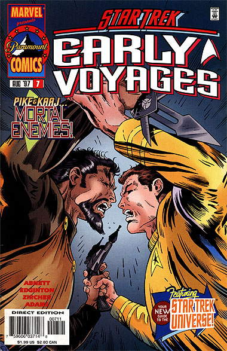
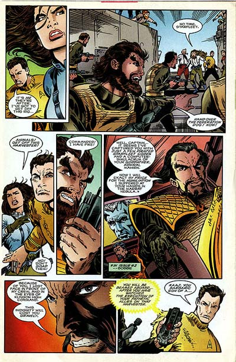

|


|
Gnese
| Episdios I Reflexes
| Palavras do autor | Palavras
do artista Star Trek
Early Voyages, n 07 agosto de 1997  Histria: Dan Abnett e Ian Edginton Material produzido por Salvador Nogueira para o Trek Brasilis
Data Estelar: 259.9 Sinopse: Em uma nave auxiliar, Pike sofre um acidente no planeta agrrio Prairie, depois de ser perseguido por Klingons. Ele estava a caminho da Terra para visitar seu pai, que, segundo comunicado enviado pelo almirante Mahirn ao capito da Enterprise, estaria muito doente. No planeta, Pike ajudado por um grupo de residentes liderados por Clare Thorn, uma ex-oficial da Frota Estelar que optou por um modo mais simples de vida. Os Klingons descem ao planeta atrs do oficial, e destroem um dos dois abrigos de pessoal e mantimentos da estao agrria. Pike parte para o abrigo atacado, na tentativa de ajudar os sobreviventes, enquanto Clare tenta manter os aliengenas longe do segundo abrigo. Descobrimos que Pike est sendo perseguido pelo comandante Kaaj, que ainda no aceitou a humilhana que o capito da Frota lhe infringiu na nebulosa Marrat. Ele quer Pike morto a qualquer custo. O que ele quase consegue, no fosse a interveno da Enterprise. A Nmero Um, no comando da nave, descobriu que a mensagem anterior do almirante Mahirn a Pike foi falsificada. Apesar disso, ela no conseguiu descobrir o paradeiro de seu capito, at que uma comunicao enviada Enterprise por uma fonte annima --provavelmente algum da tripulao de Kaaj-- enviou as informaes de onde estariam Pike e Kaaj. A Enterprise resgata Pike e coloca os Klingons para correr. Ainda no foi desta vez que Kaaj teve sua vingana. Quanto a Clare Thorn, a experincia a fez rever suas prioridades, e ela foi reincorporada Frota Estelar.  Comentrios Essa histria traz de volta os Klingons e Kaaj, mas est longe de apresentar a inteligncia e a criatividade de sua primeira apario, em "The Fires of Pharos" (segunda edio). Aqui, tudo que h uma aventura em que Pike foge dos Klingons, at ser resgatado pela Enterprise. Ponto. No h desenvolvimento dos personagens (exceto, talvez, por Kaaj e sua tripulao), nem grandes desdobramentos para o futuro da srie. H um elemento interessante que introduzido --o fato de haver um traidor a bordo do cruzador Klingon--, mas no desenvolvido nem aqui, nem mais adiante na srie, o que acaba consistindo em mais uma das perguntas que ficam sem resposta pelo cancelamento abrupto da publicao. Essa edio tambm sofreu com o tamanho reduzido da histria --diferentemente das edies anteriores, que tinham 40 pginas, esta aqui s tem 32, o que dificulta produzir algo alm de socos e pontaps. Por outro lado, por essa natureza de "ao", a histria utiliza bem os recursos dos quadrinhos, com grandes sequncias de luta envolvendo Pike e os Klingons na superfcie de Prairie. No fim das contas, uma edio mediana da srie.
|